Wydział ZarządzaniaUniwersytet Warszawski
Pomoc naukowa
Podcasty przygotowane przez:
Wydział Zarządzania UW
Centrum Innowacji Odpowiedzialnych Społecznie
Wydział Zarządzania UW
64 odcinki — od Taylora i Fayola po najnowsze nurty.
Nagrania powstały z wykorzystaniem syntezy mowy. Za dobór i treść materiału odpowiada Katedra Teorii Organizacji i Zarządzania.
Tryb studiów
Sekcje kursu
Odsłuchane 0 z 64
0%